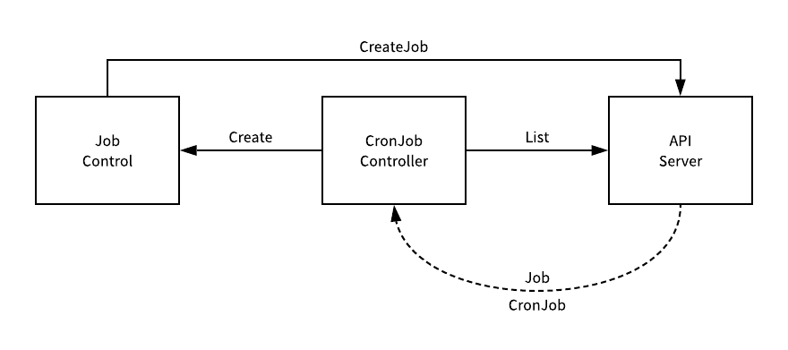

Kubernetes 资源控制器配置文件的编写是学习 K8S 的重中之重！
资源配额控制器确保了指定的资源对象始终不会超过配置的资源，能够有效的降低整个系统宕机的机率，增强系统的鲁棒性，对整个集群的稳定性有非常重要的作用。

1. Pod 控制器
需要我们重点掌握的知识点
什么是控制器呢？在 Kubernetes 中内建了很多控制器(controller)，这些相当于一个状态机，用来控制 Pod 的具体状态和行为的，我们成为 Pod 控制器。咳咳咳，在 Kubernetes 中内建控制器有如下几种，它们的功能和特点各不相同。
ReplicationControllerReplicaSetDeploymentDaemonSetStateFulSetJobCronJobHorizontal Pod Autoscaling
1.1 简单介绍
与所有其它 Kubernetes 配置一样，我们创建资源控制器的时候也是需要，如 apiVersion、kind 和 metadata 等字段的，通过使用这些字段组成配置文件，来完成服务部署的。
- Pod 模板
.spec.template
书写配置文件的时候，.spec.template 是一个 pod 模板，它的模式与 pod 完全相同，只是它是嵌套的，没有 apiVersion 或 kind 属性。
- 设置标签
- 优先级高 =>
.metadata.labels - 优先级低 =>
.spec.template.metadata.labels - 没有指定
.metadata.labels则默认为.spec.template.metadata.labels
- 优先级高 =>
控制器本身是可以设置标签的，用于做分类或者控制选择时使用。
- Pod 选择器
.spec.selector.spec.template.metadata.labels- 没有指定
.spec.selector则默认为.spec.template.metadata.labels
其中 .spec.selector 字段是一个标签选择器，所创建出来的标签用于选择则出匹配的 Pod。如果指定了 .spec.template.metadata.labels 字段，则必须和 .spec.selector 字段相同，否则在创建的时候将会被 API 拒绝。
- 多个副本
.spec.replicas
可以通过设置 .spec.replicas 来指定应该同时运行多少个 Pod。在任何时候，处于运行状态的 Pod 个数都可能高于或者低于设定值。例如副本个数刚刚被增加或减少时，或者一个 pod 处于优雅终止过程中而其替代副本已经提前开始创建时。如果没有指定 .spec.replicas，那么它默认是 1 个。
1.2 资源类型
- 下表列出的是
kubernetes中所有支持的类型和缩写的别名。
| 资源类型 | 缩写别名 |
|---|---|
clusters |
- |
componentstatuses |
cs |
configmaps |
cm |
daemonsets |
ds |
deployments |
deploy |
endpoints |
ep |
event |
ev |
horizontalpodautoscalers |
hpa |
ingresses |
ing |
jobs |
- |
limitranges |
limits |
namespaces |
ns |
networkpolicies |
- |
nodes |
no |
statefulsets |
- |
persistentvolumeclaims |
pvc |
persistentvolumes |
pv |
pods |
po |
podsecuritypolicies |
psp |
podtemplates |
- |
replicasets |
rs |
replicationcontrollers |
rc |
resourcequotas |
quota |
cronjob |
- |
secrets |
- |
serviceaccount |
sa |
services |
svc |
storageclasses |
- |
thirdpartyresources |
- |
1.3 格式化输出
- 要以特定的格式向终端窗口输出详细信息，可以在
kubectl命令中添加-o或者-output标志。
| 输出格式 | 描述 |
|---|---|
-o=custom-columns=<spec> |
使用逗号分隔的自定义列列表打印表格 |
-o=custom-columns-file=<filename> |
使用 文件中的自定义列模板打印表格 |
-o=json |
输出 JSON 格式的 API 对象 |
-o=jsonpath=<template> |
打印 jsonpath 表达式中定义的字段 |
-o=jsonpath-file=<filename> |
打印由 文件中的 jsonpath 表达式定义的字段 |
-o=name |
仅打印资源名称 |
-o=wide |
以纯文本格式输出任何附加信息，对于 Pod ，包含节点名称 |
-o=yaml |
输出 YAML 格式的 API 对象 |
1.4 Kubectl 命令
Kubectl详细输出和调试，使用-v或--v标志跟着一个整数来指定日志级别。
| 详细等级 | 描述 |
|---|---|
--v=0 |
总是对操作人员可见。 |
--v=1 |
合理的默认日志级别，如果您不需要详细输出。 |
--v=2 |
可能与系统的重大变化相关的，有关稳定状态的信息和重要的日志信息。这是对大多数系统推荐的日志级别。 |
--v=3 |
有关更改的扩展信息。 |
--v=4 |
调试级别详细输出。 |
--v=6 |
显示请求的资源。 |
--v=7 |
显示 HTTP 请求的 header。 |
--v=8 |
显示 HTTP 请求的内容。 |
2. ReplicationController
官方建议使用 RS 来代替 RC，完成部署服务的工作！
2.1 知识要点
与用户直接创建 pod 的情况不同，RC 能够替换因某些原因被删除或被终止的 pod，例如内核升级等情况。因此，建议使用 RC 来创建 pod，这样我们就可以不用人为的管理令人头痛的 pod 了。
- [1] 功能特点
ReplicationController 简称为 RC，同时也是 kubectl 命令的快捷方式简写使用方式，是用来确保容器应用的副本数始终保持在用户定义的副本数。如果有容器异常退出的话，其会自动创建新的 Pod 来替代，而如果有异常多出来的容器也会被自动回收掉的。
- [2] 工作方式
当 pod 数量过多时，RC 会终止多余的 pod；当 pod 数量太少时，RC 将会启动新的 pod。与手动创建的 pod 不同之处在于，由 RC 创建的 pod 在失败、被删除或被终止时会被自动替换。 例如，在中断性维护之后，创建的 pod 会在节点上会重新创建。 因此，即使应用程序只需要一个 pod，也应该使用 RC 来创建 Pod。对应 RC 我们可以类似理解为进程管理器，但是 RC 不是监控单个节点上的单个进程，而是监控跨多个节点的多个 pod。
2.2 示例运行
- 下面示例中，我们配置了运行
nginx web服务的三个副本，可以通过运行以下命令来运行示例任务。
# [ReplicationController]
# .spec.template是.spec的唯一必需字段
# 只允许.spec.template.spec.restartPolicy等于Always
apiVersion: v1
kind: ReplicationController
metadata:
name: nginx
namespace: prod
spec:
replicas: 3
selector:
app: nginx
spec:
metadata:
name: nginx
labels:
app: nginx
spec:
containers:
- name: nginx
image: nginx
ports:
- containerPort: 80
- 奇怪的是，我们创建了三个
Pod，但发现此时并没有一个Pod正在运行，这是因为可以正在拉取镜像。
# 部署服务
$ kubectl apply -f ./replication.yaml
replicationcontroller/nginx created
# 检查RC的状态
$ kubectl describe rc/nginx
Pods Status: 3 Running / 0 Waiting / 0 Succeeded / 0 Failed
3. ReplicaSet
官方建议使用 RS 来代替 RC，完成部署服务的工作！
3.1 知识要点
- [1] 功能特点
官方在新版本的 Kubernetes 中建议使用 RS 来取代 RC，而且 RS 跟 RC 的唯一区别是在选择器的支持上。其中 RS 支持集集合(selector)的选择器，其就意味着其支持通过标签进行 Pod 的选择，而 RC 仅支持基于相等选择器。
- [2] 工作方式
RS 确保任何时间都有指定数量的 Pod 副本在运行，而且大多数支持 RC 的 kubectl 命令也支持 RS，但是 rolling-update 这个命令是个例外。如果你需要使用滚动更新功能，请考虑使用 Deployment 来创建 Pod。
虽然 RS 可以独立的使用和创建， 然而 Deployment 是一个更高级的概念，它管理 RS 并向 Pod 提供声明式的更新以及许多其他有用的功能，用作协调 Pod 创建、删除和更新的机制。当你使用 Deployment 的时候，不必担心还要管理它们创建的 RS 控制器。因此，建议使用 Deployment 而不是直接使用 ReplicaSet，除非你需要自定义更新业务流程或根本不需要更新。
3.2 示例运行
- 下面示例中，我们配置了运行
php-redis服务的三个副本，可以通过运行以下命令来运行示例任务。
# [ReplicaSet]
# .spec.template是.spec的唯一必需字段
# 只允许.spec.template.spec.restartPolicy等于Always
apiVersion: apps/v1
kind: ReplicaSet
metadata:
name: frontend
namespace: prod
labels:
app: guestbook
tier: frontend
spec:
replicas: 3
selector:
matchLabels:
tier: frontend
template:
metadata:
labels:
tier: frontend
spec:
containers:
- name: php-redis
image: gcr.io/google_samples/gb-frontend:v3
- name: GET_HOSTS_FROM
value: dns
ports:
containerPort: 80
env:
- 将此清单保存到
frontend.yaml中，并将其提交到Kubernetes集群，应该就能创建yaml文件所定义的ReplicaSet及其管理的Pod。
# 部署服务
$ kubectl create -f ./frontend.yaml
replicaset.apps/frontend created
# 检查RC的状态
$ kubectl describe rs/frontend
4. Deployment
官方推荐的 Pod 部署方式，所以以后创建 Pod 的话，优先选择！
4.1 知识要点
- [1] 功能特点
Deployment 为 Pod 和 ReplicaSet 提供了一个声明式定义的方法，用来替代以前的 RC 来方便的管理应用。而定义方式分为，命令式(RS)和声明式(Deployment)两种，前者侧重于考虑如何实现，而后者侧重于定义想要什么。
[2] 应用场景
- 定义
Deployment来创建Pod和RS - 滚动升级和回滚应用
- 扩容和缩容
- 暂停和继续
Deployment
- 定义
[3] RS 和 Deployment 的关联
4.2 示例运行 - 创建
- 下面示例中，我们配置了运行
nginx web服务的三个副本，可以通过运行以下命令来运行示例任务。
apiVersion: apps/v1
kind: Deployment
metadata:
name: nginx-deployment
namespace: prod
labels:
app: nginx
spec:
replicas: 3
selector:
matchLabels:
app: nginx
template:
metadata:
labels:
app: nginx
spec:
containers:
- name: nginx
image: nginx:1.7.9
ports:
- containerPort: 80
- 通过运行以下命令创建
Deployment。
# 部署服务
$ kubectl apply -f ./nginx-deployment.yaml
# 检查Deployments的状态
$ kubectl get deployments
NAME DESIRED CURRENT UP-TO-DATE AVAILABLE AGE
nginx-deployment 3 3 3 3 18s
# 上述输出字段含义解释
NAME: 列出了集群中Deployments的名称
DESIRED: 显示应用程序的期望状态的所需副本数
CURRENT: 显示当前正在运行的副本数
UP-TO-DATE: 显示已更新以实现期望状态的副本数
AVAILABLE: 显示应用程序可供用户使用的副本数
AGE: 显示应用程序运行的时间量
# 查看Deployment展开状态
$ kubectl rollout status deployment/nginx-deployment
# 检查RC的状态
$ kubectl describe rs
NAME DESIRED CURRENT READY AGE
nginx-deployment-75675f5897 3 3 3 18s
# 查看每个Pod自动生成的标签
$ kubectl get pods --show-labels
NAME READY STATUS LABELS
nginx-deployment-75675f5897-7ci7o 1/1 Running app=nginx,pod-template-hash=3123191453
nginx-deployment-75675f5897-kzszj 1/1 Running app=nginx,pod-template-hash=3123191453
nginx-deployment-75675f5897-qqcnn 1/1 Running app=nginx,pod-template-hash=3123191453
4.3 示例运行 - 更新
- 让我们更新
nginx的Pods，使用nginx:1.9.1镜像来代替之前的旧镜像。
# 更新nginx服务
$ kubectl set image deployment/nginx-deployment nginx=nginx:1.9.1
deployment/nginx-deployment image updated
- 当然，我们也可以使用
edit命令来编辑Deployment配置文件，达到同样的效果。
# 编辑Deployment文件
$ kubectl edit deployment/nginx-deployment
deployment/nginx-deployment edited
- 使用
rollout命令来，查看其展开的状态。
# 查看展开状态
$ kubectl rollout status deployment/nginx-deployment
Waiting for rollout to finish: 2 out of 3 new replicas have been updated...
deployment/nginx-deployment successfully rolled out
# 检查RC的状态
$ kubectl get rs
NAME DESIRED CURRENT READY AGE
nginx-deployment-1564180365 3 3 3 6s
nginx-deployment-2035384211 0 0 0 36s
# 查看Pod的状态(生成了新的Pods)
$ kubectl get pods
NAME READY STATUS RESTARTS AGE
nginx-deployment-1564180365-khku8 1/1 Running 0 14s
nginx-deployment-1564180365-nacti 1/1 Running 0 14s
nginx-deployment-1564180365-z9gth 1/1 Running 0 14s
Deployment可确保在更新时仅关闭一定数量的Pods，默认情况下，它确保至少75%所需Pods是运行的，即有25%的最大不可用。Deployment还确保仅创建一定数量的Pods高于期望的Pods数，默认情况下，它可确保最多增加25%期望Pods数。出现上述情况的时候，多是在进行扩容、缩容、滚动升级和回滚应用时出现。可以看到，当第一次创建
Deployment的时候，它创建了一个ReplicaSet并将其直接扩展至3个副本。更新Deployment时，它创建了一个新的ReplicaSet，并将其扩展为1，然后将旧ReplicaSet缩小到2，以便至少有2个Pod可用，并且最多创建4个Pod。然后，它继续向上和向下扩展新的和旧的ReplicaSet，具有相同的滚动更新策略。最后，将有3个可用的副本在新的ReplicaSet中，旧ReplicaSet将缩小到0。
# 获取Deployment的更多信息
$ kubectl describe deployments
4.4 示例运行 - 回滚
当
Deployment不稳定或遇到故障的的时候，例如循环崩溃，这时可能就需要回滚Deployment了。在默认情况下，所有Deployment历史记录都保留在系统中，以便可以随时回滚。当然，可以通过修改历史记录限制来更改该限制。当回滚到较早的修改版时，只有Deployment Pod模板部分会回滚。这是因为当Deployment Pod模板(.spec.template)发生更改时，才会创建新修改版本。例如，如果更新模板的标签或容器镜像，其他更新，如扩展Deployment。假设在更新
Deployment时犯了一个拼写错误，将镜像名称命名为nginx:1.91而不是nginx:1.9.1，这样我们更新Pod的时候就会出现错误。
# 设置镜像来更新服务
$ kubectl set image deployment/nginx-deployment nginx=nginx:1.91
deployment.apps/nginx-deployment image updated
# 遇到问题展开状态来验证
# 通过如下命令来查看Deployment是否完成
$ kubectl rollout status deployment/nginx-deployment
Waiting for rollout to finish: 1 out of 3 new replicas have been updated...
- 查看旧
ReplicaSets和Pod的时候，会发现由新ReplicaSet创建的1个Pod卡在镜像拉取循环中，要解决此问题，需要回滚到以前稳定的Deployment版本。
# 查看RS状态
$ kubectl get rs
NAME DESIRED CURRENT READY AGE
nginx-deployment-1564180365 3 3 3 25s
nginx-deployment-2035384211 0 0 0 36s
nginx-deployment-3066724191 1 1 0 6s
# 查看Pod状态
$ kubectl get pods
NAME READY STATUS RESTARTS AGE
nginx-deployment-1564180365-70iae 1/1 Running 0 25s
nginx-deployment-1564180365-jbqqo 1/1 Running 0 25s
nginx-deployment-1564180365-hysrc 1/1 Running 0 25s
nginx-deployment-3066724191-08mng 0/1 ImagePullBackOff 0 6s
- 按照如下步骤，检查
Deployment回滚历史。
# 检查Deployment修改历史
$ kubectl rollout history deployment/nginx-deployment
deployments "nginx-deployment"
REVISION CHANGE-CAUSE
1 kubectl apply --filename=https://k8s.io/examples/controllers/nginx-deployment.yaml --record=true
2 kubectl set image deployment.v1.apps/nginx-deployment nginx=nginx:1.9.1 --record=true
3 kubectl set image deployment.v1.apps/nginx-deployment nginx=nginx:1.91 --record=true
# 查看修改历史的详细信息
$ kubectl rollout history deployment/nginx-deployment --revision=2
deployments "nginx-deployment" revision 2
Labels: app=nginx
pod-template-hash=1159050644
......
- 按照下面给出的步骤将
Deployment从当前版本回滚到以前的版本，即版本2。现在，Deployment将回滚到以前的稳定版本。如所见，Deployment回滚事件回滚到修改版2是从Deployment控制器生成的。
# 现在已决定撤消当前展开并回滚到以前的版本
$ kubectl rollout undo deployment/nginx-deployment
deployment/nginx-deployment
# 通过下面命令来回滚到特定修改版本
$ kubectl rollout undo deployment/nginx-deployment --to-revision=2
deployment/nginx-deployment
- 检查回滚是否成功或者
Deployment是否正在运行，可以通过下面命令查看。
# 查看deployment状态
$ kubectl get deployment nginx-deployment
NAME DESIRED CURRENT UP-TO-DATE AVAILABLE AGE
nginx-deployment 3 3 3 3 30m
# 获取Deployment描述信息
$ kubectl describe deployment nginx-deployment
4.5 示例运行 - 缩放
- 我们可以通过使用如下指令，缩放
Deployment。假设启用水平自动缩放Pod在集群中，可以为Deployment设置自动缩放器，并选择最小和最大 要基于现有Pods的CPU利用率运行的Pods。
# 扩容(3->10)
$ kubectl scale deployment/nginx-deployment --replicas=10
deployment.apps/nginx-deployment scaled
# 水平缩放
$ kubectl autoscale deployment/nginx-deployment --min=10 --max=15 --cpu-percent=80
deployment/nginx-deployment scaled
5. DaemonSet
介绍 DaemonSet 的基本概念和使用方法
5.1 知识要点
- [1] 基本概念
DaemonSet 确保全部或者一些 Node 上运行一个 Pod 的副本。当有 Node 加入集群时，也会为他们新增一个 Pod 。当有 Node 从集群移除时，这些 Pod 也会被回收。删除 DaemonSet 将会删除它创建的所有 Pod。
一种简单的用法是为每种类型的守护进程在所有的节点上都启动一个 DaemonSet。 一个稍微复杂的用法是为同一种守护进程部署多个 DaemonSet；每个具有不同的标志， 并且对不同硬件类型具有不同的内存、CPU 要求。下面是使用 DaemonSet 的一些典型用法：
- 运行集群存储
daemon，例如在每个Node上运行glusterd、ceph
- 在每个
Node上运行日志收集daemonfluentd、logstash
- 在每个
Node上运行监控daemonPrometheus Node Exporter、collectd、Datadog
- [2] 实现原理
- [3] 调度逻辑
仅在某些节点上运行 Pod：如果指定了 .spec.template.spec.nodeSelector，DaemonSet Controller 将在能够与 Node Selector 匹配的节点上创建 Pod。类似这种情况，可以指定 .spec.template.spec.affinity，然后 DaemonSet Controller 将在能够与 node Affinity 匹配的节点上创建 Pod。 如果根本就没有指定，则 DaemonSet Controller 将在所有节点上创建 Pod。
5.2 示例运行
- 每个
Node节点都运行一个nginx服务。
apiVersion: apps/v1
kind: DaemonSet
metadata:
name: deamonset-example
labels:
app: daemonset
spec:
selector:
matchLabels:
name: deamonset-example
template:
metadata:
labels:
name: deamonset-example
spec:
containers:
- name: daemonset-example
image: hub.escapelife/nginx:v1
# 创建DaemonSet的Pod
kubectl apply -f ./daemonset-test.yaml
# 查看服务状态
kubectl get daemonsets
kubectl get pods --namespace default
- 每个
Node节点都运行一个fluentd日志监控服务。
apiVersion: apps/v1
kind: DaemonSet
metadata:
name: fluentd-elasticsearch
namespace: kube-system
labels:
k8s-app: fluentd-logging
spec:
selector:
matchLabels:
name: fluentd-elasticsearch
template:
metadata:
labels:
name: fluentd-elasticsearch
spec:
tolerations:
- key: node-role.kubernetes.io/master
effect: NoSchedule
containers:
- name: fluentd-elasticsearch
image: quay.io/fluentd_elasticsearch/fluentd:v2.5.2
resources:
limits:
memory: 200Mi
requests:
cpu: 100m
memory: 200Mi
volumeMounts:
- name: varlog
mountPath: /var/log
- name: varlibdockercontainers
mountPath: /var/lib/docker/containers
readOnly: true
terminationGracePeriodSeconds: 30
volumes:
- name: varlog
hostPath:
path: /var/log
- name: varlibdockercontainers
hostPath:
path: /var/lib/docker/containers
# 创建DaemonSet的Pod
kubectl apply -f https://k8s.io/examples/controllers/daemonset.yaml
# 查看服务状态
kubectl get daemonsets.apps fluentd-elasticsearch --namespace kube-system
kubectl get pods --namespace kube-system --label name=fluentd-elasticsearch
6. StatefulSet
StatefulSet 是用来管理有状态应用的工作负载 API 对象。
在 k8s 中，ReplicaSet 和 Deployment 主要是用于处理无状态的服务，无状态服务的需求往往非常简单并且轻量，每一个无状态节点存储的数据在重启之后就会被删除。但是如果我们需要保留，那该怎么办呢？所以为了满足有状态的服务这一特殊需求，StatefulSet 就是 Kubernetes 为了运行有状态服务引入的资源，例如 MySQL 等。
6.1 知识要点
- [1] 基本概念
产生 StatefulSet 的用途主要是用于管理有状态应用的工作负载对象，与 ReplicaSet 和 Deployment 这两个对象不同，StatefulSet 不仅能管理 Pod 的对象，还它能够保证这些 Pod 的顺序性和唯一性。以及，其会为每个 Pod 设置一个单独的持久标识 ID 号，这些用于标识序列的标识符在发生调度时也不会丢失，即无论怎么调度，每个 Pod 都有一个永久不变的 ID。
- [2] 功能特点
StatefulSets 最为重要的功能就是稳定，稳定意味着 Pod 调度或重调度的整个过程是有持久性的。如果应用程序不需要任何稳定的标识符或有序的部署、删除或伸缩，则应该使用由一组无状态的副本控制器提供的工作负载来部署应用程序，比如 Deployment 或者 ReplicaSet 可能更适用于您的无状态应用部署需要。
- 稳定的、唯一的网络标识符
- 稳定的、持久的存储
- 有序的、优雅的部署和缩放
- 有序的、自动的滚动更新
需要额外注意的是，删除或者收缩 StatefulSet 并不会删除它关联的存储卷，这样做是为了保证数据安全。而且，StatefulSet 当前需要无头服务来负责 Pod 的网络标识，所以需要事先创建好。
- [3] 访问方式
我们在下面的示例中是使用 StatefulSet 和对应的无头服务来做演示的，当 StatefulSet Pod 创建之后其具有唯一的标识，该标识包括顺序标识、稳定的网络标识和稳定的存储。该标识和 Pod 是绑定的，不管它被调度在哪个节点上。
- 有序索引
对于具有 N 个副本的 StatefulSet，StatefulSet 中的每个 Pod 将被分配一个整数序号，从 0 到 N-1，该序号在 StatefulSet 上是唯一的。
- 稳定的网络 ID
在 StatefulSet 中的每个 Pod 根据 StatefulSet 的名称和 Pod 的序号派生出它的主机名。组合主机名的格式为$(StatefulSet名称)-$(序号)。上例将会创建三个名称分别为 web-0、web-1、web-2 的 Pod。 StatefulSet 可以使用 headless 服务 控制它的 Pod 的网络域。管理域的这个服务的格式为：$(服务名称).$(命名空间).svc.cluster.local，其中 cluster.local 是集群域。 一旦每个 Pod 创建成功，就会得到一个匹配的 DNS 子域，格式为： $(pod 名称).$(所属服务的 DNS 域名)，其中所属服务由 StatefulSet 的 serviceName 域来设定。
- 稳定的存储
在 Kubernetes 中 StatefulSet 模式会为每个 VolumeClaimTemplate 创建一个 PersistentVolumes。请注意，当 Pod 或者 StatefulSet 被删除时，与 PersistentVolumeClaims 相关联的 PersistentVolume 并不会被删除。要删除它必须通过手动方式来完成。
| 集群域名 | StatefulSet 域名 | Pod DNS | Pod 主机名 |
|---|---|---|---|
| cluster.local | nginx.default.svc.cluster.local | web-{0..N-1}.nginx.default.svc.cluster.local | web-{0..N-1} |
| cluster.local | nginx.foo.svc.cluster.local | web-{0..N-1}.nginx.foo.svc.cluster.local | web-{0..N-1} |
| kube.local | nginx.foo.svc.kube.local | web-{0..N-1}.nginx.foo.svc.kube.local | web-{0..N-1} |
- [4] 管理策略
对于某些分布式系统来说，StatefulSet 的顺序性保证是不必要和/或者不应该的。这些系统仅仅要求唯一性和身份标志。为了解决这个问题，在 Kubernetes 1.7 中引入了 .spec.podManagementPolicy。
OrderedReady 的 Pod 管理策略：是 StatefulSets 的默认选项，它告诉 StatefulSet 控制器遵循上文展示的顺序性保证。
Parallel 的 Pod 管理策略：是告诉 StatefulSet 控制器并行的终止所有 Pod，在启动或终止另一个 Pod 前，不必等待这些 Pod 变成 Running 和 Ready 或者完全终止状态。
apiVersion: v1
kind: Service
metadata:
name: nginx
labels:
app: nginx
spec:
clusterIP: None
selector:
app: nginx
ports:
- port: 80
name: web
---
apiVersion: apps/v1
kind: StatefulSet
metadata:
name: web
spec:
serviceName: "nginx"
podManagementPolicy: "Parallel"
replicas: 2
......
6.2 示例运行
- 名为
nginx的Headless Service用来控制网络域名。 - 名为
web的StatefulSet有一个Spec，它表明将在独立的2个Pod副本中启动nginx容器。
apiVersion: v1
kind: Service
metadata:
name: nginx
labels:
app: nginx
spec:
ports:
- port: 80
name: web
clusterIP: None
selector:
app: nginx
---
apiVersion: apps/v1
kind: StatefulSet
metadata:
name: web
spec:
serviceName: "nginx"
replicas: 2
selector:
matchLabels:
app: nginx
template:
metadata:
labels:
app: nginx
spec:
containers:
- name: nginx
image: k8s.gcr.io/nginx-slim:0.8
ports:
- containerPort: 80
name: web
volumeMounts:
- name: www
mountPath: /usr/share/nginx/html
volumeClaimTemplates:
- metadata:
name: www
spec:
accessModes: ["ReadWriteOnce"]
resources:
requests:
storage: 1Gi
- 创建和查看 - StatefulSet
# 创建定义在web.yaml中的Headless Service和StatefulSet
$ sudo kubectl apply -f web.yaml
service/nginx created
statefulset.apps/web created
# 验证是否成功创建
$ sudo kubectl get service nginx
NAME TYPE CLUSTER-IP EXTERNAL-IP PORT(S) AGE
nginx ClusterIP None <none> 80/TCP 12s
$ sudo kubectl get statefulset web
NAME DESIRED CURRENT AGE
web 2 1 20s
# 动态查看创建状态，发现是顺序创建Pod的
# 我们可以动态的看到web-0的Pod先创建完毕之后，web-1才会被启动
$ sudo kubectl get pods -w -l app=nginx
NAME READY STATUS RESTARTS AGE
web-0 0/1 Pending 0 0s
web-0 0/1 Pending 0 0s
web-0 0/1 ContainerCreating 0 0s
web-0 1/1 Running 0 19s
web-1 0/1 Pending 0 0s
web-1 0/1 Pending 0 0s
web-1 0/1 ContainerCreating 0 0s
web-1 1/1 Running 0 18s
# 获取StatefulSet的Pod
$ sudo kubectl get pods -l app=nginx
NAME READY STATUS RESTARTS AGE
web-0 1/1 Running 0 1m
web-1 1/1 Running 0 1m
- 查看绑定的特点 - StatefulSet
# 使用稳定的网络身份标识
$ sudo kubectl exec web-0 -- bash -c \
"for i in 0 1; do kubectl exec web-$i -- sh -c 'hostname'; done"
web-0
$ sudo kubectl exec web-1 -- bash -c \
"for i in 0 1; do kubectl exec web-$i -- sh -c 'hostname'; done"
web-1
# 稳定的网络身份标识
$ sudo kubectl run -i --tty --image busybox:1.28 \
dns-test --restart=Never --rm nslookup web-0.nginx
Server: 10.0.0.10
Address 1: 10.0.0.10 kube-dns.kube-system.svc.cluster.local
Name: web-0.nginx
Address 1: 10.244.1.6
nslookup web-1.nginx
Server: 10.0.0.10
Address 1: 10.0.0.10 kube-dns.kube-system.svc.cluster.local
Name: web-1.nginx
Address 1: 10.244.2.6
# 写入稳定的存储
$ sudo kubectl get pvc -l app=nginx
NAME STATUS VOLUME CAPACITY ACCESSMODES AGE
www-web-0 Bound pvc-15c268c7-b507-11e6-932f-42010a800002 1Gi RWO 48s
www-web-1 Bound pvc-15c79307-b507-11e6-932f-42010a800002 1Gi RWO 48s
- 删除
StatefulSet中所有的Pod之后，我们使用上述查看网络身份标识的命令再次查看，发现Pod的序号、主机名、SRV条目和记录名称没有改变，但和Pod相关联的IP地址可能发生了改变。因为我们使用的是StatefulSet的模式，其他模式不会有这个问题。这就是为什么不要在其他应用中使用StatefulSet中的Pod的IP地址进行连接，这点很重要。
$ sudo kubectl delete pod -l app=nginx
pod "web-0" deleted
pod "web-1" deleted
# 对应的服务访问地址，我们可以间接访问
web-0.nginx.default.svc.cluster.local
web-1.nginx.default.svc.cluster.local
- 扩容/缩容 - StatefulSet
# 扩容
$ sudo kubectl scale sts web --replicas=5
statefulset.apps/web scaled
# 缩容
$ sudo kubectl patch sts web -p '{"spec":{"replicas":3}}'
statefulset.apps/web patched
# 五个存储仍然存在
$ sudo kubectl get pvc -l app=nginx
NAME STATUS VOLUME CAPACITY ACCESSMODES AGE
www-web-0 Bound pvc-15c268c7-b507-11e6-932f-42010a800002 1Gi RWO 13h
www-web-1 Bound pvc-15c79307-b507-11e6-932f-42010a800002 1Gi RWO 13h
www-web-2 Bound pvc-e1125b27-b508-11e6-932f-42010a800002 1Gi RWO 13h
www-web-3 Bound pvc-e1176df6-b508-11e6-932f-42010a800002 1Gi RWO 13h
www-web-4 Bound pvc-e11bb5f8-b508-11e6-932f-42010a800002 1Gi RWO 13h
- 更新 - StatefulSet
StatefulSet 里的 Pod 采用和序号相反的顺序更新。在更新下一个 Pod 前，StatefulSet 控制器终止每个 Pod 并等待它们变成 Running 和 Ready。请注意，虽然在顺序后继者变成 unning 和 Ready 之前 StatefulSet 控制器不会更新下一个 Pod，但它仍然会重建任何在更新过程中发生故障的 Pod，使用的是它们当前的版本。已经接收到更新请求的 Pod 将会被恢复为更新的版本，没有收到请求的 Pod 则会被恢复为之前的版本。像这样，控制器尝试继续使应用保持健康并在出现间歇性故障时保持更新的一致性。
# Patch web StatefulSet 来执行 RollingUpdate 更新策略
$ sudo kubectl patch statefulset web -p '{"spec":{"updateStrategy":{"type":"RollingUpdate"}}}'
statefulset.apps/web patched
# 在一个终端窗口中 patch web StatefulSet 来再次的改变容器镜像
$ sudo kubectl patch statefulset web --type='json' \
-p='[{"op": "replace", "path": "/spec/template/spec/containers/0/image", \
"value":"gcr.io/google_containers/nginx-slim:0.8"}]'
statefulset.apps/web patched
- 删除 - StatefulSet
# 删除StatefulSet
kubectl delete statefulset web
statefulset.apps "web" deleted
# 删除Pod
kubectl delete pod web-0
pod "web-0" deleted
6.3 区别选择 - sts/deploy
- [1] 访问方式区别
- [2] 综合对比区别
| 类型特性 | Deployment | StatefulSet |
|---|---|---|
| 是否暴露到外网 | 可以 | 一般不 |
| 请求面向的对象 | serviceName | 指定 pod 的域名 |
| 灵活性 | 只能通过 service/serviceIp 访问到 k8s 自动转发的 pod | 可以访问任意一个自定义的 pod |
| 易用性 | 只需要关心 Service 的信息即可 | 需要知道要访问的 pod 启动的名称、headlessService 名称 |
| PV/PVC 绑定关系的稳定性(多实例) | (pod 挂掉后重启)无法保证初始的绑定关系 | 可以保证 |
| pod 名称稳定性 | 不稳定，因为是通过 template 创建，每次为了避免重复都会后缀一个随机数 | 稳定，每次都一样 |
| 启动顺序(多实例) | 随机启动，如果 pod 宕掉重启，会自动分配一个 node 重新启动 | pod 按 app-0、app-1…app-（n-1），如果 pod 宕掉重启，还会在之前的 node 上重新启动 |
| 停止顺序(多实例) | 随机停止 | 倒序停止 |
| 集群内部服务发现 | 只能通过 service 访问到随机的 pod | 可以打通 pod 之间的通信（主要是被发现） |
| 性能开销 | 无需维护 pod 与 node、pod 与 PVC 等关系 | 比 deployment 类型需要维护额外的关系信息 |
- [3] 综上选择总结
- 如果是不需额外数据依赖或者状态维护的部署，或者
replicas是1，优先考虑使用Deployment； - 如果单纯的要做数据持久化，防止
pod宕掉重启数据丢失，那么使用pv/pvc就可以了； - 如果要打通
app之间的通信，而又不需要对外暴露，使用headlessService即可； - 如果需要使用
service的负载均衡，不要使用StatefulSet，尽量使用clusterIP类型，用serviceName做转发； - 如果是有多
replicas，且需要挂载多个pv且每个pv的数据是不同的，因为pod和pv之间是一一对应的，如果某个pod挂掉再重启，还需要连接之前的pv，不能连到别的pv上，考虑使用StatefulSet； - 能不用
StatefulSet，就不要用；
7. Job/CronJob
任务计划/周期性任务计划
7.1 知识要点
- [1] 基本概念
Job 负责批处理任务，即仅执行一次的任务，它保证批处理任务的一个或多个 Pod 成功结束。
Cron Job 管理基于时间的 Job，即在给定时间点只运行一次或周期性地在给定时间点运行。
- [2] 执行特点
Job 会创建一个或者多个 Pods，并确保指定数量的 Pods 成功终止。随着 Pods 成功结束，Job 跟踪记录成功完成的 Pods 个数。当数量达到指定的成功个数阈值时，任务结束。删除 Job 的操作会清除所创建的全部 Pods。当第一个 Pod 失败或者被删除（比如因为节点硬件失效或者重启）时，Job 对象会启动一个新的 Pod。
CronJob 对于创建周期性的、反复重复的任务很有用，例如执行数据备份或者发送邮件。CronJobs 也可以用来计划在指定时间来执行的独立任务，例如计划当集群看起来很空闲时 执行某个 Job。

- [3] Job 的并行执行
- 非并行 Job
- 通常只启动一个 Pod，除非该 Pod 失败
- 当 Pod 成功终止时，立即视 Job 为完成状态
- 具有确定完成计数的并行 Job
.spec.completions字段设置为非0的正数值- 当
.spec.completions等于1时一个成功的Pod就被视为完成
- 带工作队列的并行 Job
- 不设置
.spec.completions，默认值为.spec.parallelism - 多个 Pod 之间必须相互协调，或者借助外部服务确定每个 Pod 要处理哪个工作条目
- 每个 Pod 都可以独立确定是否其它 Pod 都已完成，进而确定 Job 是否完成
- 一旦至少 1 个 Pod 成功完成，并且所有 Pod 都已终止，即可宣告 Job 成功完成
- 不设置
- 非并行 Job
7.2 示例运行
- Job
.spec.completions标志Job结束需要成功运行的Pod个数，默认为1.spec.parallelism标志并行运行的Pod的个数，默认为1.spec.activeDeadlineSeconds标志失败Pod的重试最大时间，超过这个时间不会继续重试
apiVersion: batch/v1
kind: Job
metadata:
name: pi
spec:
restartPolicy: OnFailure
backoffLimit: 5 # timeout
activeDeadlineSeconds: 100 # timeout
ttlSecondsAfterFinished: 100 # ttl
template:
spec:
containers:
- name: pi
image: perl
command: ["perl", "-Mbignum=bpi", "-wle", "print bpi(2000)"]
restartPolicy: Never
backoffLimit: 4
# 使用下面的命令来运行此示例
$ sduo kubectl apply -f https://kubernetes.io/examples/controllers/job.yaml
job.batch/pi created
# 来检查Job的状态
$ sudo kubectl describe jobs/pi
# 查看Job对应的已完成的Pods
$ sudo kubectl get pods
# 查看PI输出结果
$ pods=$(suod kubectl get pods --selector=job-name=pi --output=jsonpath={.items..metadata.name})
$ sduo kubectl logs $pods
3.141592653589793238462......
- CronJob
.spec.schedule：指定任务运行周期(调度).spec.jobTemplate：指定需要运行的任务(Job 模板).spec.startingDeadlineSeconds：启动 Job 的期限(秒级别).spec.concurrencyPolicy：并发策略(Allow/Forbid/Replace).spec.suspend：挂起.spec.successfulJobsHistoryLimit：指定了可以保留多少完成的 Job(历史限制；默认 3).spec.failedJobsHistoryLimit：指定了可以保留多少失败的 Job(历史限制；默认 1)
apiVersion: batch/v1beta1
kind: CronJob
metadata:
name: hello
spec:
schedule: "*/1 * * * *"
jobTemplate:
spec:
template:
spec:
containers:
- name: hello
image: busybox
args:
- /bin/sh
- -c
- date; echo Hello from the Kubernetes cluster
restartPolicy: OnFailure
# 创建
$ sudo kubectl create -f cronjob.yaml
cronjob "hello" created
# 查看
$ sudo kubectl get jobs
NAME DESIRED SUCCESSFUL AGE
hello-1202039034 1 1 49s
# 查看
$ sudo kubectl get cronjob
NAME SCHEDULE SUSPEND ACTIVE LAST-SCHEDULE
hello */1 * * * * False 0 <none>
# 输出
$ pods=$(sudo kubectl get pods --selector=job-name=hello-1202039034 --output=jsonpath={.items..metadata.name})
$ sudo kubectl logs $pods
Mon Aug 29 21:34:09 UTC 2020
Hello from the Kubernetes cluster
# 删除
$ sudo kubectl delete cronjob hello
cronjob "hello" deleted
- 一旦不再需要
Cron Job，简单地可以使用kubectl命令删除它。这将会终止正在创建的Job。然而，运行中的Job将不会被终止，不会删除Job或它们的Pod。为了清理那些Job和Pod，需要列出该Cron Job创建的全部Job，然后删除它们。
# 逐个删除
$ kubectl get jobs
NAME DESIRED SUCCESSFUL AGE
hello-1201907962 1 1 11m
hello-1202039034 1 1 8m
...
$ kubectl delete jobs hello-1201907962 hello-1202039034 ...
job "hello-1201907962" deleted
job "hello-1202039034" deleted
...
# 强制删除
$ sudo kubectl delete jobs --all